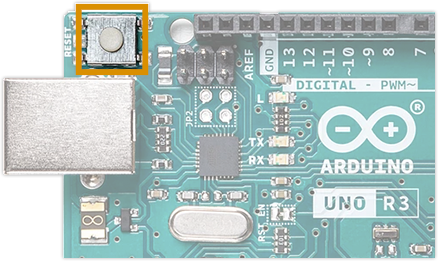

O Arduino é uma plataforma de programação de código aberto projetada para
tornar a experiência com componentes eletrónicos divertida e intuitiva. O Arduino
tem uma linguagem de programação própria e simplificada e uma vasta rede de
suporte e milhares de potenciais usos, tornando-se a plataforma perfeita para
entusiastas iniciantes e avançados.
Na informática, o Arduino é uma série de microcomputadores de placa única com componentes integrados. Série de plataformas programáveis de prototipagem eletrônica (para testes e projetos eletrônicos) de placa única e hardware livre (código aberto), que permite aos usuários criar objetos eletrônicos interativos e independentes, usando o microcontrolador Atmel AVR ou ARM com suporte de entrada/saída embutido, A plataforma foi criada em 2005 na Itália, com o objetivo de criar ferramentas de baixo custo, acessíveis, flexíveis, independentes e de fácil uso para principiantes, amadores e profissionais, com foco especial naqueles que não têm acesso a controladores sofisticados e ferramentas complexas. Esta plataforma é atualmente fabricada pela companhia italiana Smart Projects e também pela companhia estadunidense SparkFun Electronics.
É um computador para todos
Podemos pensar no Arduino como o filho dos computadores tradicionais. O
Arduino é essencialmente um pequeno computador. É capaz de receber entradas
(como o apertar de um botão ou a leitura de um sensor de luz) e interpretar essas
informações para controlar várias saídas (colocar uma luz LED a piscar ou ligar
um motor elétrico).
A placa Arduino é muito parecida com um
computador de pequeno porte, sendo composta pelo
microcontrolador, memória RAM, memória secundária(memória flash), clock e comunicação USB
entre outras
funcionalidades. Temos o modelo mais
popular dos Arduinos que é o Uno R3, porém, para os
projetos deste livro qualquer outro modelo de Arduino
pode ser usado sem restrições.
Como funciona o Arduíno
A placa Arduino funciona de forma semelhante à placa de um computador.
Como mencionamos, ela armazena um software embarcado, que fará o
controle sobre as ações que serão realizadas por ela. Além disso, ela
contém diversos componentes, confira os principais a seguir.
Microcontrolador
Um microcontrolador é uma peça que contém um ou mais processadores,
uma memória RAM e uma interface compatível com entrada e saída de
periféricos (mouse, teclado, etc). Podemos dizer também que o
microcontrolador é um “mini computador”, já que com apenas a sua
tecnologia conseguimos processar dados e executar tarefas de informática
básica no Arduino.
Para cada tipo de Arduino, temos um diferente tipo de microcontrolador,
tais como:
-
Arduino Uno R3 possui o microcontrolador ATmega328P.
-
Arduino Leonardo possui o microcontrolador ATmega32U4.
-
Arduino Nano Every possui o microcontrolador ATmega4809.
-
Arduino Micro possui o microcontrolador ATmega32U4.
-
Arduino Nano 33 BLE possui o microcontrolador nRF52840.
Fonte de alimentação
.png)
A placa Arduino contém duas formas de ser energizada. A primeira é por
meio da conexão com um cabo USB tipo B, que pode ser conectado a um
computador, por exemplo. É por essa conexão, inclusive, que enviamos o
software para a placa.
Outra forma de energizar a placa é com a fonte de alimentação de parede,
dessas que contém um conector cilíndrico. Entretanto, é preciso observar a
voltagem da fonte, que deve ser entre 6 e 12 Volts, conforme o modelo da
placa. Vale ressaltar que é perigoso queimar a placa se utilizarmos fonte de
alimentação superior a 20 Volts.
Pinos de conexões
A placa Arduino contém diversos pinos de conexões que servem para a
construção de circuitos, entre eles:
-
GND: é a abreviação de Ground, que significa terra. Portanto, ele é
utilizado para o aterramento do circuito e, assim, evitar choques
elétricos;
-
pinos de voltagens: são pinos que fornecem energia, geralmente são
de 5 e 3,3 Volts;
-
analógicos: são pinos que leem sinais analógicos. Portanto, eles
podem ler um sensor analógico e converter para um sinal digital;
-
digitais: são pinos que entendem sinais digitais (0 e 1). Eles servem
para determinar se um botão foi pressionado, por exemplo, e enviar
comandos como o de ascender a luz.
-
conector USB: permite a comunicação entre o computador
responsável por programar a placa e a placa arduíno.
Botão de reset

A placa Arduino contém um botão de reset, que serve para reiniciar a placa.
Esse recurso é muito útil especialmente na fase de testes do projeto, em que
podem ocorrer falhas que causem o travamento do sistema.
Indicador LED de energia

A placa Arduino contém um pequeno LED para indicar quando ela está
energizada, seja por meio da conexão USB, seja por fonte de energia. O
importante é que ela sempre deve estar acesa quando receber energia. Caso
contrário, pode indicar alguma inconsistência no circuito.
Modelos de placas de Arduino
Existem diversos modelos de placas Arduino. Cada uma contém um
microcontrolador, que varia de acordo com o modelo. Elas também se
diferenciam pela capacidade de memória, clock e pela tensão de entrada e
de operação. Além disso, elas oferecem a possibilidade de conectar
recursos adicionais. Confira algumas delas a seguir.
-
Arduino Uno R3
A placa Uno R3 é ideal para quem está começando a utilizar o Arduino,
pois contém a configuração necessária para projetos iniciais. Seus
principais recursos são:
-
6 pinos de entradas analógicas;
-
14 entradas e saídas digitais, no qual 6 pinos podem ser utilizados
como saída PWM (Pulse Width Modulation), que funciona como se
adicionássemos intensidade no sinal. Dessa forma, ela pode ser
utilizada, por exemplo, como volume, para regular a intensidade de
brilho e muito mais.
Vale ressaltar que os pinos digitais que funcionam com PWM contém um
sinal de til “~” ao lado do número do pino correspondente. Dessa forma,
fica mais fácil identificar quais têm essa característica.
-
Arduino Pro Mini
A placa Arduino Pro Mini é uma placa criada pela SparkFun Electronics e
com dois tipos de versões, uma com 3.3V e 8 MHz, e a outra com 5.5V e
16 MHz. Além disso, possui as seguintes especificações:
-
8 pinos de entradas analógicas.
-
20 entradas e saídas digitais, no qual 6 pinos podem ser utilizados
-
Também possui um botão de reset.
O seu layout é compatível com o Arduino Mini, pode ser carregado através
de um USB e é focado para instalações semi-permanentes.
-
Arduino Leonardo
A placa Arduino Leonardo é um modelo com um pouco mais de recursos
que o modelo anterior, pois ela contém:
- 7 saídas PWM;
- 12 entradas analógicas;
- 20 entradas e saídas digitais.
Ao conectar essa placa no computador, ela pode ser reconhecida como um
mouse ou um teclado. Portanto, esse modelo é mais indicado para a
realização de projetos de automação em que o recurso desenvolvido fará
interações com o computador.
- Arduino Mega R3
A placa Arduino Mega R3 é uma versão da placa Uno, só que com muito
mais pinos de entrada e saída, entre eles:
- 54 entradas digitais, em que 14 que funcionam como PWM;
- 16 entradas analógicas.
Por ter essa grande quantidade de pinos, esse modelo de placa é muito útil
para projetos que utilizam muitos botões, por exemplo.
- Arduino Due
A placa Arduino Due é uma das mais rápidas entre os modelos disponíveis.
Isso porque ela contém um microcontrolador arm de 32 bits. Além disso,
ela oferece os seguintes recursos:
-
54 entradas e saídas digitais, em que 12 podem ser utilizadas como PWM;
- 12 entradas analógicas;
- 4 interfaces seriais.
- Arduino Micro
O Arduino Micro é muito semelhante ao Arduino Leonardo, possuindo
amplo suporte ao USB e sendo muito utilizável para os periféricos de
mouse e teclado. Foi desenvolvido em conjunto com a Adafruit e possui as
seguintes características:
- 20 entradas digitais.
- 7 saídas PWM.
- 12 entradas analógicas.
- Arduino Nano
O Arduino Nano é uma das menores placas fabricadas, o seu carregamento
é feito através de uma porta mini-usb. Além disso possui os seguintes
atributos:
- 22 entradas digitais.
- 6 saídas PWM.
- 8 entradas analógicas.
- Sensores e módulos
Além das placas Arduino, existem uma série de sensores e módulos que
podem ser conectados a ela para agregar funcionalidades. Entre eles:
- sensor para medir a intensidade da luz;
- sensor de temperatura;
- sensor para medir o grau de inclinação;
- medidor de proximidade;
- módulo de conexão com a Internet.
Aplicações
A principal finalidade do Arduino num sistema é facilitar a prototipagem, implementação ou emulação do controle de sistemas interativos, a nível doméstico, comercial ou móvel, da mesma forma que o CLP controla sistemas de funcionamento industriais. Com ele é possível enviar ou receber informações de basicamente qualquer sistema eletrônico, como identificar a aproximação de uma pessoa e variar a intensidade da luz do ambiente conforme a sua chegada. Ou abrir as janelas de um escritório de acordo com a intensidade da luz do sol e temperatura ambiente.
Os campos de atuação para o controle de sistemas são imensos, podendo ter aplicações na área de impressão 3D, robótica, engenharia de transportes, engenharia agronômica, musical. ou até mesmo em ambiente escolar, para o desenvolvimento de experimentos otimizando assim a aprendizagem dos alunos tanto na área de física quanto de química.